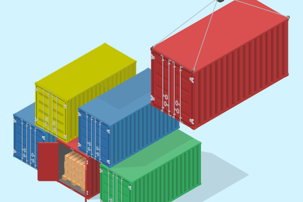

What is Containerization
Containerization packages software code and dependencies so it can run consistently on any infrastructure. This packaged software is called a "container". It seperates from the host OS and becomes portable and more easy to use across different systems. Container's lightweight system lets them also run much faster. Click on the link "Virtual vs. Container" to see how virtualization and containerization compare.